Vedic Studies
All four Vedas, five branches, the Smartas of two Vedas and the Tarka Vedanta Shastras. The Shuklayajurveda Kanva branch was added in 2018.
Sound
Flute: original raga composition for this website
Raga Pahadi

From the Goshala and the Veda Pathashala to SGS Hospital, daily Annadana and the birds of Shuka Vana, the Peetham serves humanity without the barricades of caste, creed, race or religion.
Avadhoota Datta Peetham provides medical, educational, vocational and spiritual services to the needy. Compassion here reaches cows, children, patients and birds alike.

Datta worship, Vedic rituals and meditation
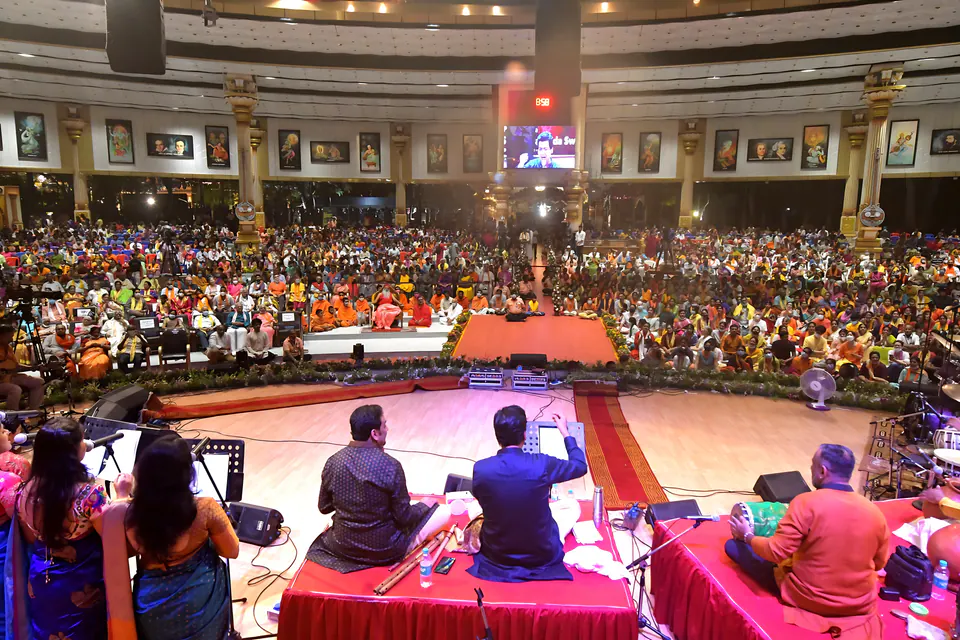
The healing power of divine music
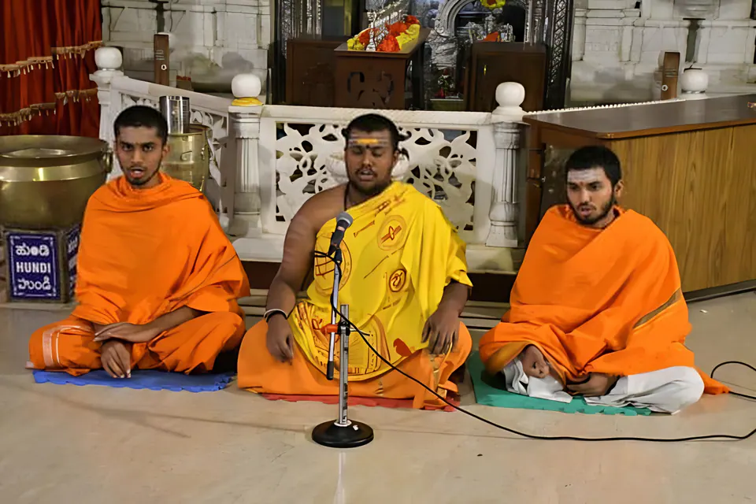
The Veda Pathashala, founded in 1985
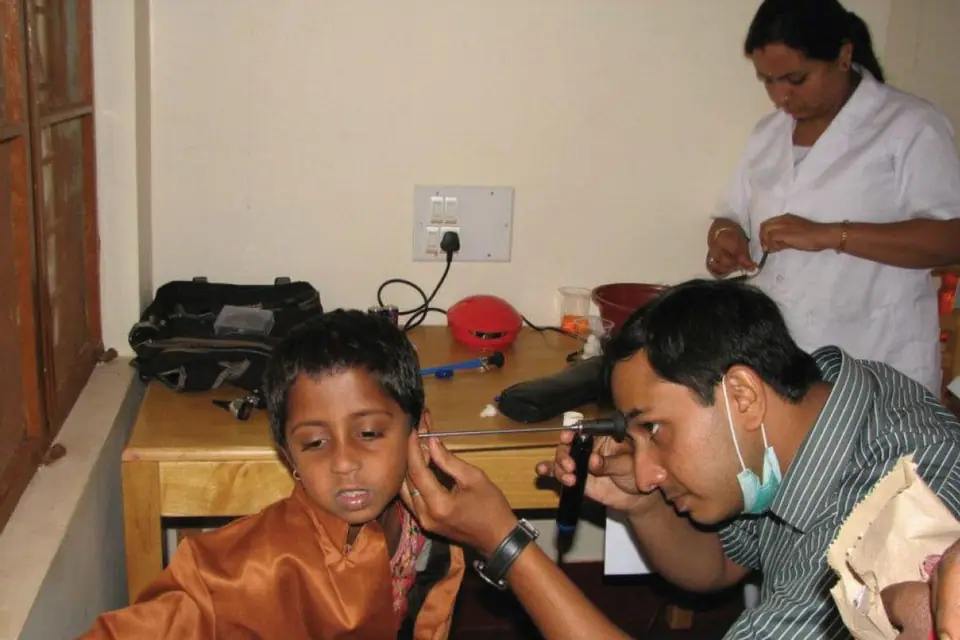
SGS Hospital and free medical camps
A Gau Shala for more than 50 cows
Centres and programmes worldwide
Service to mankind is service to God.
Sri SwamijiSri Swamiji emphasises that spiritual life includes service to those in need. This practice, called Karma Yoga, means working selflessly and surrendering the fruits of one’s actions to God.
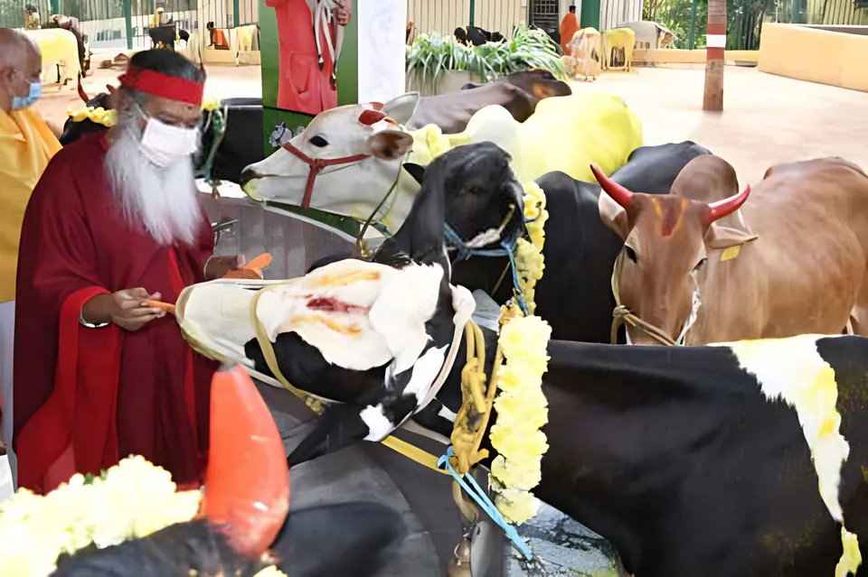
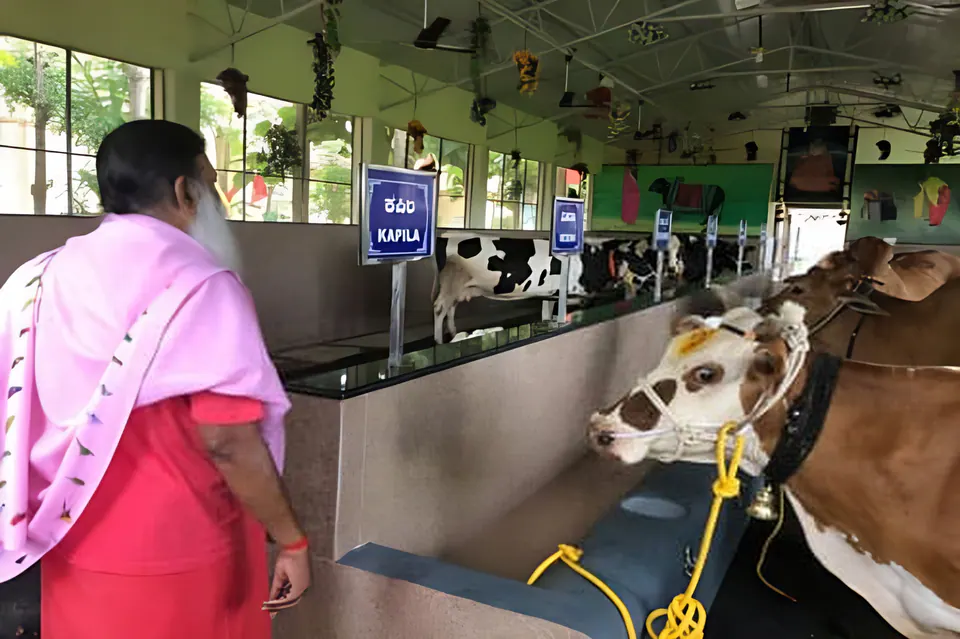
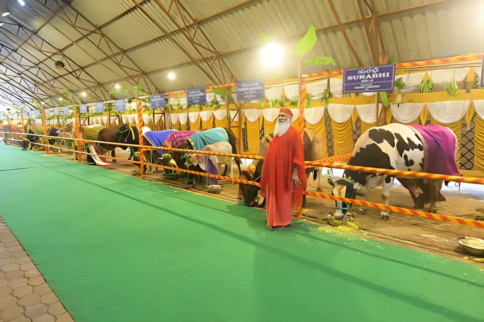
Kamadhenu, Kalpavriksha, Amruta and Mother Lakshmi emerged together in creation as the most splendorous embodiments of divinity. The scriptures declare that all Devatas reside in the cow, so Sanatana Dharma reveres her as Gomaata.
Sri Swamiji has established a large Goshala at the Mysuru Ashram that shelters and cares for more than 50 cows, with Goshalas maintained at other branches too.
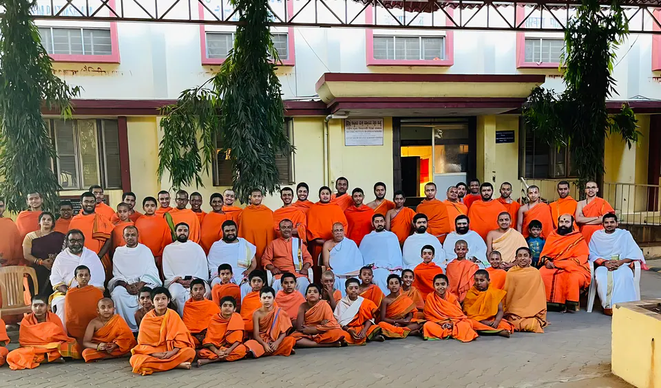
Sri Ganapathy Sachchidananda Veda Pathashala, founded in 1985, teaches all four Vedas and Sanskrit in the traditional Gurukula system — nurturing young students in the living Vedic tradition while preparing them for the modern world.
Around 120 students are pursuing Vedic education at the Mysuru Ashram, and the Peetham also runs Veda Pathashalas in Pithapuram and Jayalakshmipuram (Bommeparti), Andhra Pradesh. Sri Swamiji calls Sanskrit not a language but a “Bhava”, a feeling. The Junior Pontiff, Sri Bala Swamiji, is Himself an alumnus.
All four Vedas, five branches, the Smartas of two Vedas and the Tarka Vedanta Shastras. The Shuklayajurveda Kanva branch was added in 2018.

Daily rituals, meditation and chanting to connect with the divine. Veda Parayanas are held regularly, and a Priest Training Centre serves the wider community.

A balanced curriculum that includes modern subjects. Sri Swamiji asks students to savour the wisdom of the Vedas while pursuing the branches of modern study.
Held every year before Sri Swamiji’s birthday celebrations in May, in all four Vedas. Students from across India take part, and those who excel are honoured by the Peetham.
Pre-school and high-school students, since the Peetham took over and improved two dilapidated schools in 1989 — plus furniture, infrastructure and toilets for impoverished schools.
Run by SGS Ashram, Girinagar, Bengaluru for communication-impaired children: diagnosis and intervention from infant stimulation to vocational training.
For Mysuru’s children: shlokas, social-responsibility awareness, lectures and Datta Kriya Yoga, with Bala Datta classes for the youngest.
The SGS Vedanidhi Academy & Master’s Institute (SVAMI), the Peetham’s unit for Vedic research and publication, is recognised by Karnataka Sanskrit University as a Centre of Excellence.
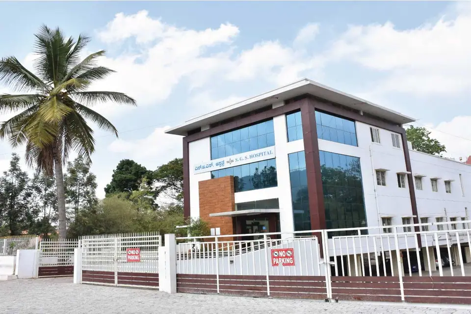
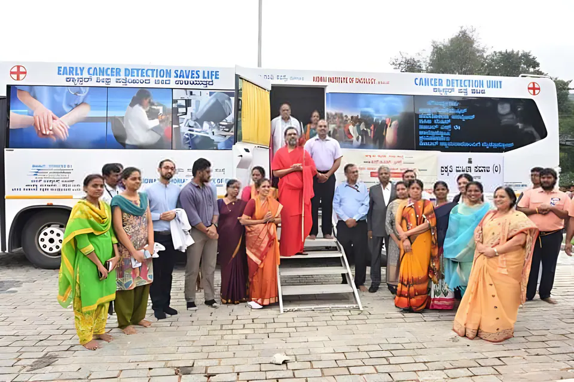
Sri Ganapathy Sachchidananda Hospital operates a comprehensive healthcare system within the Holistic Health Centre, providing preventive and curative care: outpatient services in Ayurveda, Allopathy, Homeopathy, Naturopathy and other systems, and Ayurvedic inpatient care.
Sri Swamiji always emphasises primary health care, rather than spending lakhs of rupees on tertiary health care.
Every month, SGS Hospital attends to 5,000–10,000 people. A Mobile Dispensary Van regularly visits the villages around Mysuru, and the hospital takes part in national programmes such as Immunization and Pulse-Polio. The Holistic Health Centre was inaugurated by former President of India Sri R. Venkataraman and then Chief Minister of Karnataka Sri S.M. Krishna.
SGS Hospital regularly conducts free medical camps for the detection and treatment of various diseases.
Regular free camps at SGS Hospital
In addition, annual free medical camps are organised for the needy during the Chaturmasya Vrata of Sri Bala Swamiji, including cancer screening for women over 40.
Chaturmasya Vrata camps, 2024
Blood-donation drive
A small dispensary opens in the Ashram, where a visiting physician treats minor ailments.
The “Humanity Service Center” is established in a new building, now known as Manipadma Kuteera. Sri Swamiji’s timeline dates the inauguration of SGS Hospital, to provide free medical services, to 1978.
Medical services expand to the Swami Narahari Teertha Complex, renamed SGS Hospital, Holistic Health Centre.
In Sri Swamiji’s 70th birth year, the free SGS Hospital Polyclinic Day Care Centre (Allopathy) opens in a new building.
Free daily outpatient consultation and counselling. Inpatients receive Panchakarma and other treatments for chronic ailments, with six special rooms, general wards and a ‘Pathya’ diet.
Internal Medicine, Pediatrics, Gynaecology, Cardiology, Orthopedics, Dental Care, ENT and Eye Care, emergency care and minor surgery — with free consultation, counselling and medicines.
Rehabilitation for children with Erb’s palsy, cerebral palsy, autism or delayed development, from as early as six weeks, combining Ayurveda and Physiotherapy.
Electrotherapy, exercise therapy, massage and manipulative therapy, with rehabilitation after fractures, joint replacement and laminectomy.
Allied services Music Therapy · Yoga Therapy · People’s Diagnostic Centre

It is a tradition that every visitor to the Ashram receives free food three times a day. More than one million people are fed every year at the Mysuru Ashram and its branches.
The Sri Jayalakshmi Matha Nitya Annadana Trust was established in 1986. On every full moon (Purnima), the Peetham also organises Annadana for those in need, and during Sri Swamiji’s birthday celebrations each May, volunteer groups serve meals in Mysuru, Bengaluru, Hyderabad, Vijayawada and other places.
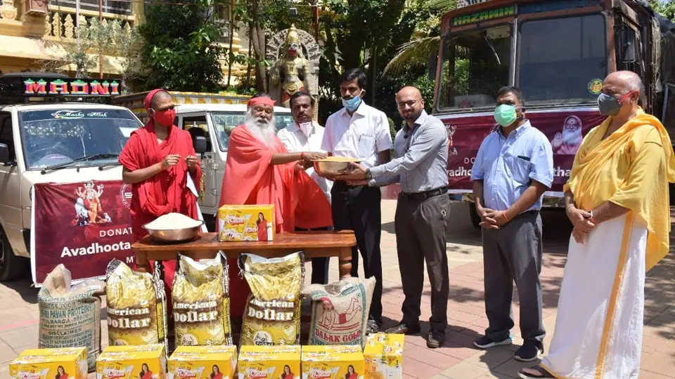
Sri Swamiji directed the Peetham and its Ashrams in India and abroad to provide food and other help to the poor and marginalised.
“Bonsai trees and birds are Swamiji’s two eyes. Nada is his voice. His breath is the Veda.”
Born at Mekedatu, in the heart of a jungle, Sri Swamiji has always had a natural affinity for birds and animals. He urges every child and adult to adopt not one tree, but several.

A rehabilitation centre for birds, with its own bird hospital: a free-flight walk-in aviary that shelters abused, injured and abandoned birds. About 70 people care for them, including two resident vets. In 2018 Shuka Vana was invited to join the global “Year of the Bird” project.
Guinness World Record, 6 May 2017: most bird species in an aviary. The certificate pictured records 468 species.
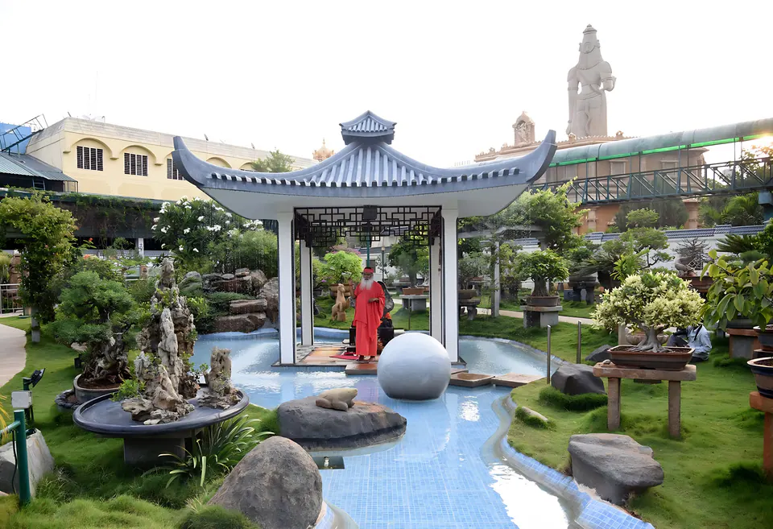
More than 450 miniaturised trees in an oriental garden setting, nurtured by Sri Swamiji Himself. At the World Bonsai Convention in the Mysuru Ashram on 21 December 2016, Sri Swamiji was awarded the Guinness World Record for the largest display of bonsai trees.
Guinness World Record, 2016: largest display of bonsai trees
Sri Swamiji says“At the end of our life, what good we did to the world is what matters, not how much we amassed for ourselves!
Lasting happiness lies in serving others in their times of need!”

Sri Datta Humane Services is the volunteer corps of Avadhoota Datta Peetham, dedicated to the service of Sri Swamiji, His Ashrams and related social programmes in India and abroad.
As Sri Swamiji has made clear many times, Humanity is His Religion, Music is His Language and Devotion is His methodology. SDHS and the Datta Senas volunteer groups have received state and national awards.
The four pillars of strength
Free check-ups, Pulse-Polio drives, blood donation camps, and stretchers and support equipment for the differently abled.
Scholarships, school supplies and infrastructure for students from economically weaker sections.
Relief materials and rehabilitation during natural calamities such as floods, earthquakes and pandemics.
Tree-plantation drives, cleanliness campaigns and awareness programmes on conservation.
Care for abandoned and injured animals through shelters and veterinary services.
Service to pilgrims during major socio-religious community events.

Follow Sri Datta Humane Services on Facebook for news of seva activities and camps.
Call +91 (0821) 2486 486 or write to mail@dattapeetham.com to offer your seva.
SDHS camps appear on the Peetham calendar — the next listed is at Vishwaroopa Datta Kshetra, Ganagapura, 15–17 December 2026.
Your offering sustains Annadana, Gau Seva, the Veda Pathashala, free medical care and the birds of Shuka Vana. Donations are made on the Peetham’s own system at dattapeetham.org, where you choose the fund to support.
On the donation page, choose INR (₹) if you have an Indian residential address, or USD ($) if you live outside India. The Sri Jayalakshmi Matha Nitya Annadana Trust accepts INR only. You can also give on behalf of friends and family by adding the same donation to your cart more than once.
Bhaktimala, the Peetham’s monthly magazine since 1976, is published in seven languages. All Kannada and English issues since October 2022 are in the Bhaktimala app. Existing English and Kannada subscribers can write to bhaktimala@sgstech.cc to enable app access; for new subscriptions, contact the Bhaktimala office at Datta Peetham, Mysuru (see Contact). Other subscriptions are on the Peetham’s subscriptions page.